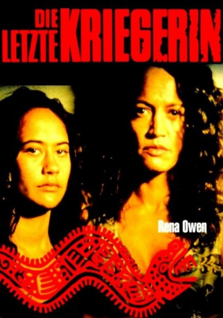

#3363 Die Letzte Kriegerin
Alternativ: Once Were Warriors
 
 IMDB-Wertung: 7.9 / 10
IMDB-Wertung: 7.9 / 10  Metascore: 0
Metascore: 0 
Erschütterndes Drama über eine Maori-Familie im Elendsviertel einer neuseeländischen Großstadt. Lee Tamahori erzählt die Geschichte von Beth, die trotz ihrer Stärke nicht verhindern kann, dass ihre Familie durch die Arbeitslosigkeit und den Alkoholismus ihres gewalttätigen Ehemannes nach und nach zerbricht.
Jahr: 1994
Dauer: 102 Minuten
FSK: 16
Land: Neuseeland Studio: Senator FilmTonspuren: DTS - ,
Untertitel:
Auflösung: 1080p (1920x1080) Größe: 7864 MB
Genre: Drama, Krimi
Regisseur:  Lee Tamahori
Lee Tamahori
Drehbuch: Riwia Brown, Alan Duff
Soundtrack: Murray Grindlay, Murray McNabb
Darsteller:
 Rena Owen als Beth Heke
Rena Owen als Beth Heke Temuera Morrison als Jake Heke
Temuera Morrison als Jake Heke- Mamaengaroa Kerr-Bell als Grace Heke
- Julian Arahanga als Nig Heke
- Taungaroa Emile als Boogie Heke
- Joseph Kairau als Huata Heke
 Cliff Curtis als Bully
Cliff Curtis als Bully- Pete Smith als Dooley
- George Henare als Bennett
- Shannon Williams als Toot
- Calvin Tuteao als Taka (Gang Leader)
- Ian Mune als Judge
- Wiki Oman als Youth Advocate
- Donald V. Allen als Jake's Mate
- Rachael Morris Jr. als Polly Heke
- Mere Boynton als Mavis
- Ray Bishop als King Hitter (in pub)
- Te Whatanui Skipwith als Te Tupaea
- Rangi Motu als Matawai
- Robert Pollock als Policeman
- Jessica Wilcox als Policewoman
- Stephen Hall als Prosecuting Officer
- Israel Williams als Male Youth #1
- Johnathan Wiremu als Male Youth #2
- Richard Meihana als Taunter in Court
- Edna Stirling als Woman #1
- Ngawai Simpson als Woman #2
- Spike Kem als Old Drunk
- Arona Rissetto als Nig's Friend
- Fran Viveaere als Nig's Girlfriend
- Brian Kairau als Joking Man Outside Pub (Jake's Mate)
- Charlie Tumahai als Karaoke Singer
- Tama Renata als Party Guitarist
- Guy Moana als Evicted Partygoer / Pub Goer
- Riwia Brown als Bully's Girl
- Mac Hona als Core Gang Member
- Percy Robinson als Core Gang Member
- Jason Kerapa als Core Gang Member
- Robbie Ngauma als Core Gang Member
- Eddie Tongalahi als Core Gang Member
- Sam Masters als Core Gang Member
- Chris Mason als Core Gang Member
- Marshall Kairau als Jake's Mate
- Joseph Te Whiu als Jake's Mate
- Jim Ngaata als Jake's Mate
- David Rare als Jake's Mate
- Charles Marsh als Jake's Mate
- Winstone Bedgood als Jake's Mate
- Piki Mark als Jake's Mate
- Royal Waa als Jake's Mate
Datei: X:\1994\Letzte Kriegerin, Die (1994, FSK16, 1920x1080).mkv seit 24.03.2016
Festplatte: HD 1992-1995
 Es gibt insgesamt 67 Filme in der Gruppe '1994'
Es gibt insgesamt 67 Filme in der Gruppe '1994'